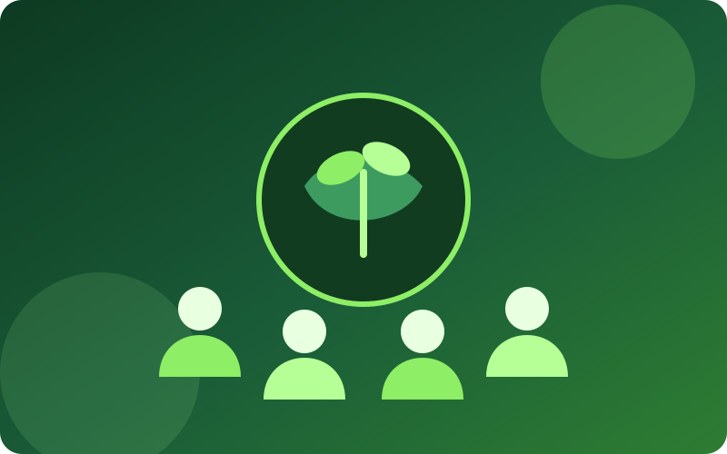

Renovação e Reflorestamento
O plantio de espécies nativas protege nascentes, reduz ilhas de calor nas cidades e recupera a fauna local.
🎬 CONTEÚDO MULTIMÍDIA
Explore vídeos com audiodescrição, galeria visual comentada e materiais externos para aprofundar o conhecimento ambiental.
Esta área reúne recursos audiovisuais e ilustrações educativas com suporte completo de audiodescrição em voz alta para pessoas cegas ou com baixa visão, garantindo acesso igualitário ao conhecimento ecológico.
Descrição visual cena a cena (0s a 5s): Em primeiro plano, sobre fundo escuro neutro, um botão floral verde e amarelo começa fechado. Ao longo de cinco segundos em câmera acelerada (time-lapse), dezenas de pétalas amarelas se expandem radialmente até que a flor esteja completamente aberta, exibindo seu centro alaranjado.
Abrir vídeos complementares sobre educação ambiental no YouTube →
Cada painel visual abaixo possui um botão exclusivo para leitura da audiodescrição detalhada da imagem:
O plantio de espécies nativas protege nascentes, reduz ilhas de calor nas cidades e recupera a fauna local.

O aproveitamento da luz solar e o uso racional da água diminuem a pressão sobre hidrelétricas e reservatórios.

A identificação padronizada por cores facilita a triagem de papel, vidro, plástico, metal e orgânicos.

A educação ambiental ganha força quando escolas, universidades e famílias atuam juntas na vizinhança.
Conheça as 17 metas globais para erradicar a pobreza e proteger o meio ambiente e o clima até 2030.
Objetivos de Desenvolvimento Sustentável →Consulte cartilhas públicas, planos nacionais de resíduos sólidos e campanhas de educação ambiental.
Portal do Ministério do Meio Ambiente →Dados e manuais educativos sobre conservação de bacias hidrográficas e uso sustentável da água no Brasil.
Portal da Agência Nacional de Águas →